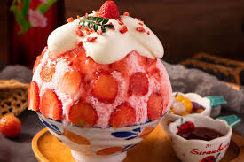

-
Bangali food
Bengali cuisine, hailing from the Bengal region (including Bangladesh and parts of India), is known for its flavorful dishes, particularly those featuring fish, vegetables, and rice. Staples include rice, fish (often freshwater), and a variety of vegetables, with lentils gaining prominence in recent times. Popular dishes include Macher Jhol (fish curry), Kosha Mangsho (mutton curry), and Shorshe Ilish (hilsa fish in mustard sauce).

-
Chinese food
Chinese cuisine comprises cuisines originating from China, as well as from Chinese people from other parts of the world. Because of the Chinese diaspora and the historical power of the country, Chinese cuisine has profoundly influenced many other cuisines in Asia and beyond, with modifications made to cater to local palates. Chinese food staples such as rice, soy sauce, noodles, tea, chili oil, and tofu, and utensils such as chopsticks and the wok, can now be found worldwide.
- chaomin
- meat
In American Chinese cuisine, it is a stir-fried dish consisting of noodles, meat (chicken being most common but pork, beef, shrimp or tofu sometimes being substituted), onions and celery. It is often served as a specific dish at westernized Chinese restaurants. Vegetarian or vegan chow mein is also common.

-
Desert
Dessert, the last course of a meal. In the United States dessert is likely to consist of pastry, cake, ice cream, pudding, or fresh or cooked fruit
- cake
- faloda 
- ice-cream
- semai